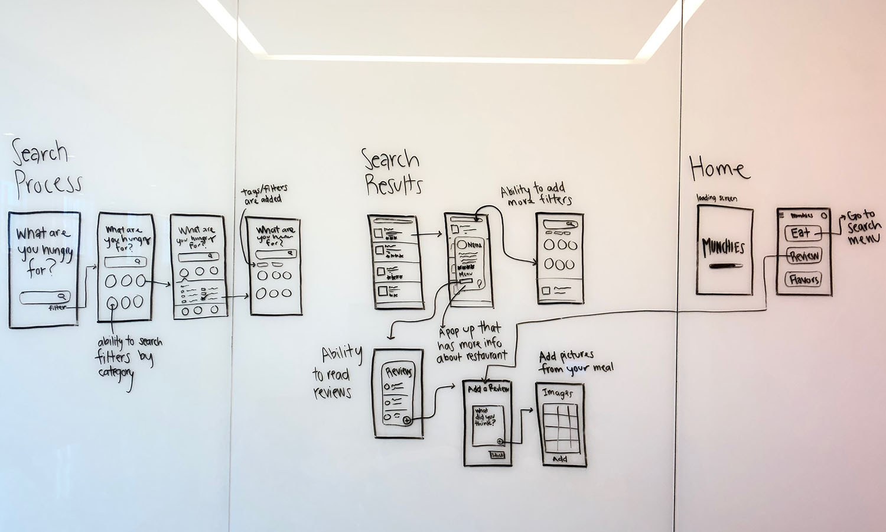
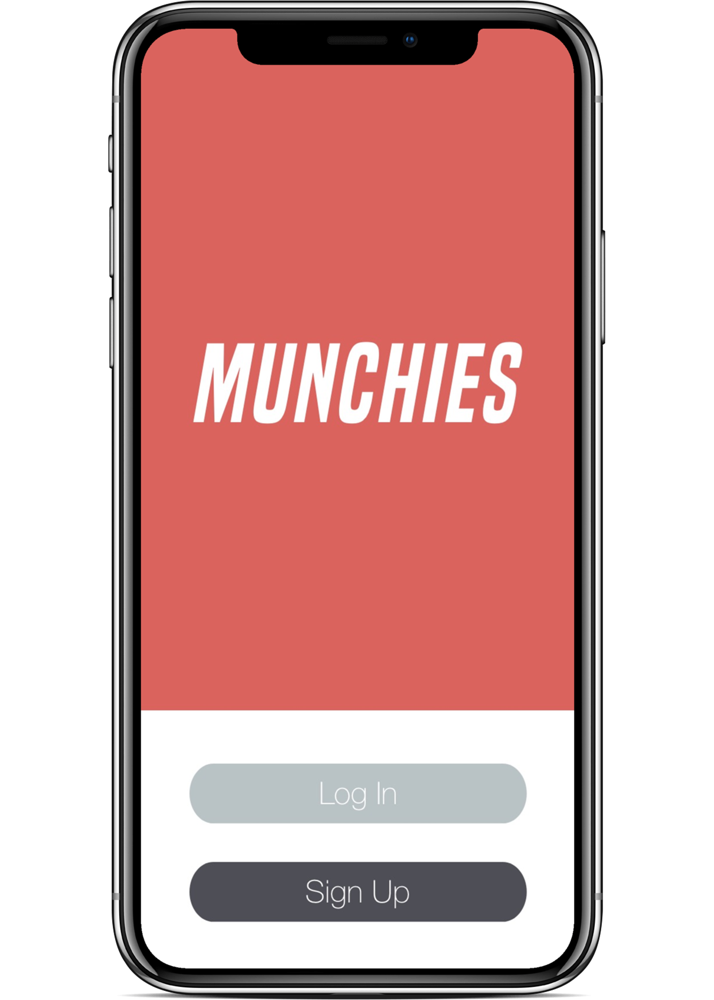
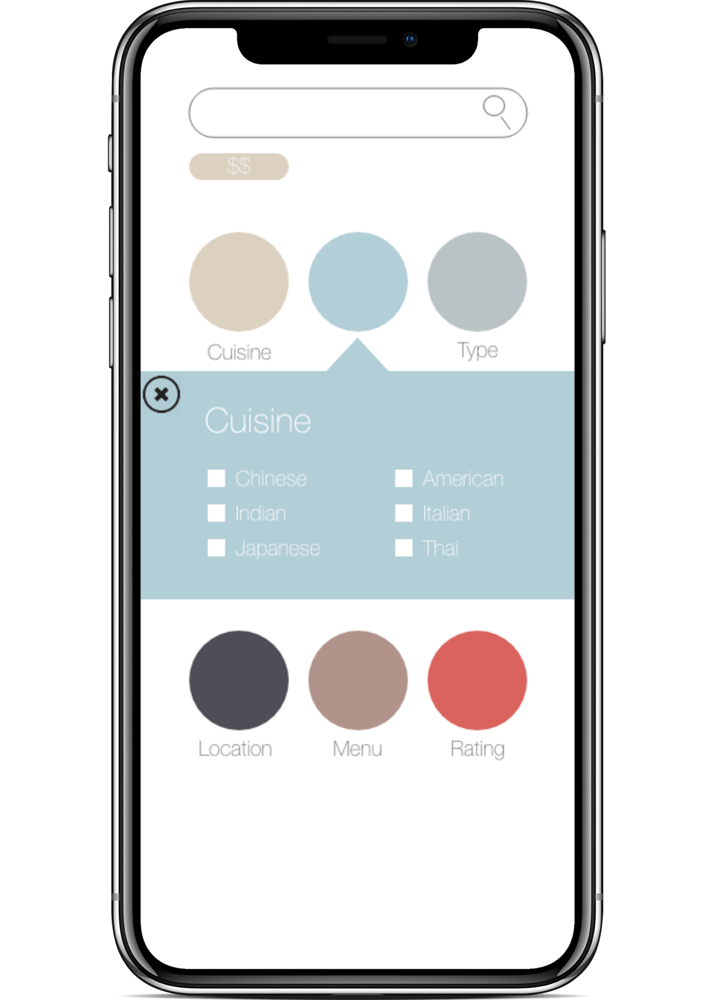

Context This group project was completed for our Programming for the Information
Professional course. We built the app from the ground up, starting with HTML/CSS
and adding in JavaScript features.
College students typically go out to eat in groups, which can be difficult
when everyone has different preferences. They also discover restaurants in
unconventional ways. Current restaurant focused applications have gotten too big
and cloud the discovery experience.
Design Problem Decisions are difficult— Indecisive users need a simple way to
find the perfect restaurant. Other applications that allow users to
find various restaurants are often clouded with a variety of options
and can be difficult to use. A clean and simple interface that gets
right to the point is important for our users.
Solution This is where Munchies comes into play: an application that helps students seamlessly make
decisons on what to eat quickly in a group setting.
The Process
Research
User Interviews
Planning
Solution Brainstorming
Project Proposal
Project Plan
Design
Sketching / Wire-framing
Hi-fidelity Prototyping
Implementation
HTML + CSS
Javascript
Final Product Presentation
Research
User Interviews
To gain a better understanding of our user, we preformed initial user
interviews. During these interviews we spoke in depth with students
about their experience using various tools to find restaurants.
Some of the feedback we received included:
"The apps I use to find different restaurants are clouded with categories
other than food."
"Choosing a restaurant with a group is a challenge, especially when you don't
know what's in the area."
"When I find a new restaurant, I always forget the name when I want to share it with
friends or family."
Planning
Solution Brainstorming
Based off our user interviews, we identified the following potential
problems with current restaurant applications.
Discovery Experience is extremely clouded with non-relevant functions
Often forgetting the name of a new restaurant
Inability to share favorites with friends and family
Project Proposal
We created a project proposal with the solutions we brainstormed, however due
to the timeline of our course, we decided to limit the scope of our application
and focus on simplifying the restaurant recommendation experience.
Project Plan
We developed a project plan that contained the application requirements, software
resources, the project timeline, and our risk management plan to ensure successful
and timely execution of our project.
While some of us had more experience with HTML, CSS, and JavaScript, in order to
continue growing our skills we decided to collectively work on all aspects of the
application.
Design
We aimed to design a clean user interface with a minimalistic aesthetic, that mirrored
our goal of a simple experience.
Sketches / Wire-framing
To begin the design process, we started by sketching. Then we created low-fidelity
wireframes and high-fidelity prototypes.

Hi-Fidelity Prototype
Our prototype was created using Adobe XD, we wanted to ensure that we had a solid
vision for the direction we wanted our application to go

The Log In Page
Here you have the option to sign up or log in to your account.

The Main Page
Here you can search for a particular restaurant or you can let us make some great
suggestions for you based on your preferences.
The Results Page
This page shows the results from your filtered choices with descriptions of
each restaurant to help make your decision easy.
Coding HTML / CSS Before we started adding any functionality to the app, we set up our framework and
nailed down our style guide and CSS.
We went through a few iterations as well as tests of the html design until we were
finally happy with the result.
Javascript The next task was adding the Zomato API to our project.
Final Product In order to complete our final product in time we had to adjust our overall design.
Our original idea was to have the circles represent the larger categories. This would
allow the user to easily search through and find the relevant search filters they wanted
to add. Essentially, they would work like stylized drop-down menus. However, in the end
we settled on a simpler design that worked well for our ultimate goal.